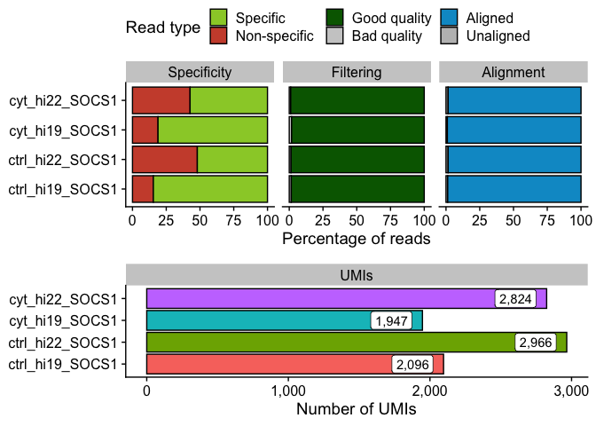
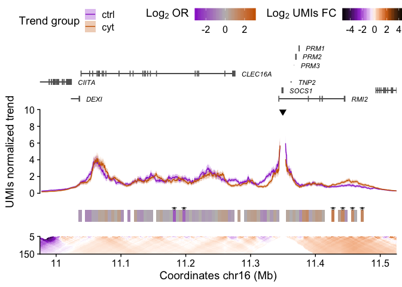

The goal of UMI4Cats is to provide and easy-to-use package to analyze UMI-4C contact data.
Installation
Now you can load the package using library(UMI4Cats).
Basic usage
## 0) Download example data
path <- downloadUMI4CexampleData()
## 1) Generate Digested genome ----------------------------
# The selected RE in this case is DpnII (|GATC), so the cs5p is "" and cs3p is GATC
hg19_dpnii <- digestGenome(cut_pos = 0,
res_enz = "GATC",
name_RE = "DpnII",
ref_gen = BSgenome.Hsapiens.UCSC.hg19::BSgenome.Hsapiens.UCSC.hg19,
out_path = "digested_genome/")
## 2) Process UMI-4C fastq files --------------------------
raw_dir <- file.path(path, "SOCS1", "fastq")
contactsUMI4C(fastq_dir = raw_dir,
wk_dir = "SOCS1",
bait_seq = "CCCAAATCGCCCAGACCAG",
bait_pad = "GCGCG",
res_enz = "GATC",
cut_pos = 0,
digested_genome = hg19_dpnii,
bowtie_index = file.path(path, "ref_genome", "ucsc.hg19.chr16"),
ref_gen = BSgenome.Hsapiens.UCSC.hg19::BSgenome.Hsapiens.UCSC.hg19,
threads = 5)## 3) Get filtering and alignment stats -------------------
statsUMI4C(wk_dir = system.file("extdata", "SOCS1",
package="UMI4Cats"))
## 4) Analyze UMI-4C results ------------------------------
# Load sample processed file paths
files <- list.files(system.file("extdata", "SOCS1", "count",
package="UMI4Cats"),
pattern="*_counts.tsv",
full.names=TRUE)
# Create colData including all relevant information
colData <- data.frame(sampleID = gsub("_counts.tsv.gz", "", basename(files)),
file = files,
stringsAsFactors=FALSE)
library(tidyr)
colData <- colData %>%
separate(sampleID,
into=c("condition", "replicate", "viewpoint"),
remove=FALSE)
# Load UMI-4C data and generate UMI4C object
umi <- makeUMI4C(colData=colData,
viewpoint_name="SOCS1")
## 5) Perform differential test ---------------------------
umi <- fisherUMI4C(umi,
filter_low = 20)
## 6) Plot results ----------------------------------------
plotUMI4C(umi,
ylim=c(0,10),
xlim=c(11e6, 11.5e6))